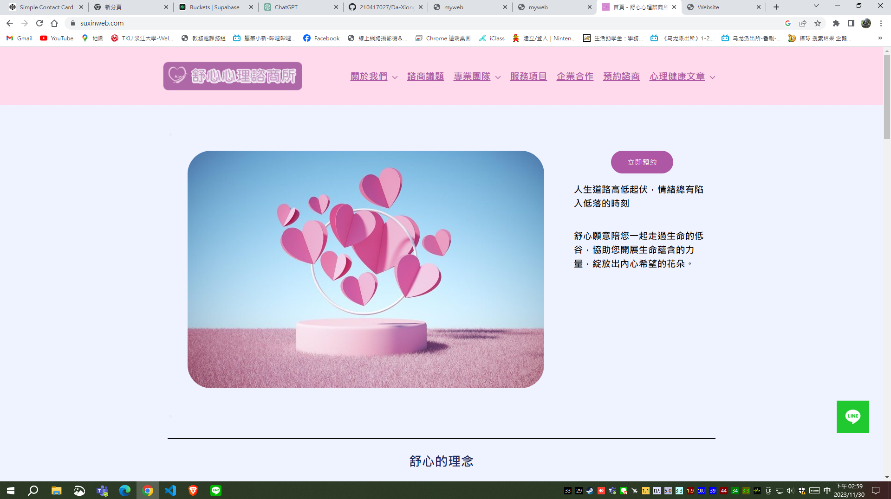
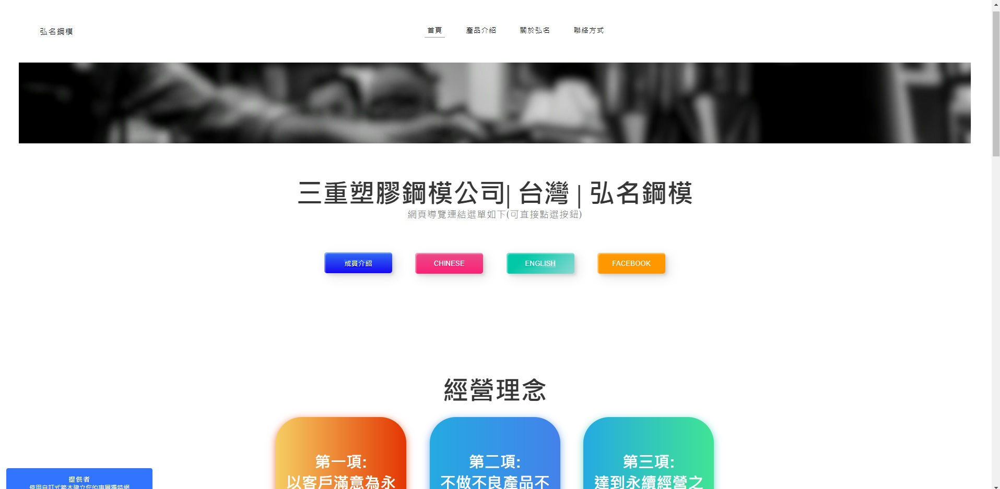

網頁設計
介紹
在我大三寒假，剛好有個通識課老師有架設網站的需求，平常我跟他的關係也還不錯，直到學期要結束時，老師問我說你是資工系的，那你會架設網站嗎? 會的話想請我利用wordpress架設一個網站，後面會再包個紅包給我，對我來說，有酬勞可以拿，又可以學習新的東西，我很快就答應了，一開始先買網路主機 、弄好網域，加上與老師討論網頁要如何設計，於是後來花了一段時間就做把網站做出來了。
舒心心理諮商所URL:
https://suxinweb.com/
舒心網頁封面

弘名鋼模網頁
後來因緣際會下，又接到了一筆網頁設計的合作，但這次合作對象的預算比較少，故這次使用weebly來製作，成果如下
弘名鋼模URL:
https://hgmoldmaker.weebly.com/
弘名鋼模封面

結論
我算蠻喜歡接這種案子的，除了有錢賺，還可以額外學習東西，這次的經驗讓我對網頁設計有了更深的了解， 也讓我對wordpress、weebly有了更多的熟悉，更重要的是當業主提出想要什麼功能時，我要去想辦法做出來， 對我來說，這也是在訓練我解決問題的能力，當把問題解決後，我會非常的有成就感。
回上一頁